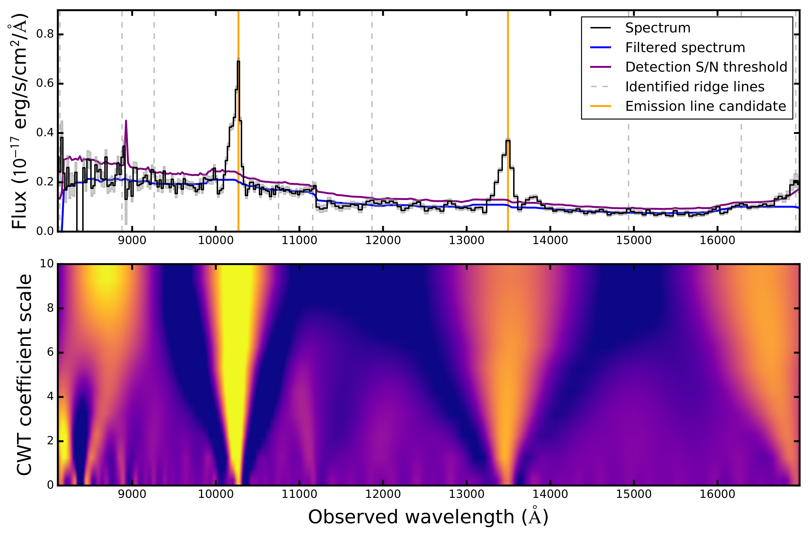

High-redshift astronomy
I'm interested in galaxies in the early universe, observed when the universe was less than 1 billion years old.
Bright Galaxies at z≳9
 The study of galaxies in the very early universe, and particularly of UV-bright galaxies, provides key input to models of galaxy formation. The number density of UV-bright galaxies is affected by factors including feedback processes, dust attenuation, the build-up of dark matter halos, and star formation efficiency. Constraining the abundance of UV-luminous galaxies thus directly constrains the fundamental physics of star formation in the early Universe.
The study of galaxies in the very early universe, and particularly of UV-bright galaxies, provides key input to models of galaxy formation. The number density of UV-bright galaxies is affected by factors including feedback processes, dust attenuation, the build-up of dark matter halos, and star formation efficiency. Constraining the abundance of UV-luminous galaxies thus directly constrains the fundamental physics of star formation in the early Universe.
Lyman-alpha emitting galaxies during reionization
×

Lyman-alpha emission is produced primarily through star formation, when young, hot stars ionizing the hydrogen surrounding them, and the photons recombine to
The dark ages that followed recombination ended with the appearance of metal-free stars and the subsequent formation of numerous low-mass, metal-poor galaxies. The collective ionizing background from these newly-forming galaxies is thought to be responsible for the reionization of the diffuse hydrogen in the intergalactic medium between redshifts 10 and 6.5. The progression of the reionization history of the universe depends on the nature of these first sources -- their number densities, luminosities, clustering, and production rates of ionizing photons -- which is currently the subject of considerable observational and theoretical efforts.
As part of my thesis, I performed a systematic search for Lya emitters at 6<z<7.6 using the HST WFC3 Infrared Spectroscopic Parallel (WISP)Survey. Using the slitless infrared grism on board the WFC3 instrument, I identified emission lines, selected single-line-emitters, confirmed through a Lyman break technique, and performed extensive work to remove contaminants.
Preparation for future observatories
Euclid
Using the WISP and 3D-HST Surveys as a "Mini Euclid" to predict things about how the emission line survey will proceed, including (1) how many emission line galaxies in the redshift range x-ydown to the expected sensitivity limits of the Wide Survey, (2) equivalent width and size distributions, and (3) contamination rates from redshift mis-identification.
WFIRST
JWST
Other projects

Automatic emission line detection
I helped develop and validate the automatic emission line detection algorithm used by the WISP Survey in detecting
This new version of the algorithm uses a continuous wavelet transform to vastly reduce the number of spurious detections in the resulting line lists. I also updated the software used for visual inspection, emission line identification, and line property measurement.
WISP emission line identification